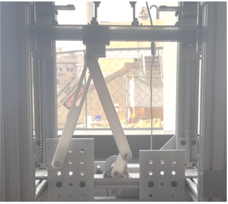
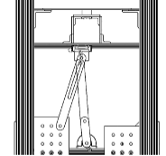
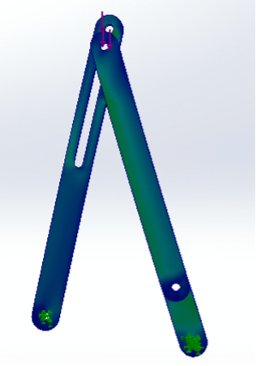

Linkage System
Designing and iterating a motor-driven linkage that converts rotary motion into extended linear button actuation.
Overview
In a team of three, we built a motor-driven linkage to maximize cumulative button contact during a two-minute test. I calculated forces and stresses at critical orientations to size the acrylic links within the fixture and motor constraints.
After the first prototype achieved only 2.96 seconds of contact, we revised the link lengths and mounting geometry. The final mechanism achieved 41.17 seconds without motor stall or structural failure.


Design
We compared linkage concepts with different crank, coupler, and rocker lengths and slotted-joint locations. The aim was to keep the output near its maximum height for a larger portion of each revolution.
We selected a slotted concept because pin motion within the slot was expected to delay rocker descent. Physical testing later showed that the final mechanism did not use this sliding action as intended.
The motor drives a crank connected through a coupler to the rocker and button-pressing assembly. Link lengths and mounting locations determine the output height and duration of button contact.
We adjusted this geometry to increase contact time while keeping the mechanism within the fixture and avoiding motor stall. The final design retained the slot, although the observed improvement came with revised geometry rather than the intended sliding dwell.
Analysis & Validation
I used hand calculations at critical orientations to estimate member forces and stresses and select link widths for the 1/4-inch acrylic parts.
We used FEA to examine stress and deflection and CAD motion studies to predict button contact time. These estimates informed the geometry before fabrication and provided a baseline for comparison with physical tests.


Fabrication & Iteration
We generated DXF files from the CAD model, fabricated the acrylic links, and assembled the mechanism on the test fixture.
The initial prototype achieved 2.96 seconds of cumulative contact against a 30.66-second prediction. The rocker descended early, although the mechanism completed the test without motor stall or structural failure.
We identified coupler geometry and downward loading as possible contributors to the early descent. We revised the rocker and coupler lengths and mounting position, then repeated the motion and structural analysis before testing.
Results
The revised mechanism achieved 41.17 seconds of cumulative contact during the 120-second test, approximately 14 times the initial result, against a final prediction of 52.84 seconds. It completed the test without motor stall or structural failure. The slot did not provide the intended sliding action and contributed to out-of-plane deflection, making a solid-link redesign a candidate for further evaluation.